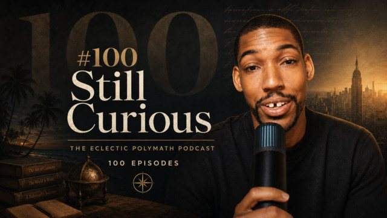

The Eclectic Polymath Podcast · Archive
#100: Still Curious...

About this episode
One hundred episodes ago, this podcast began as an experiment: take a question, follow it deeply, use AI to help shape the research, and see where curiosity leads. What started as a creative test became a growing archive of history, culture, politics, music, technology, spirituality, business, and the unexpected connections between them.
This episode looks back at the second half of season one, revisiting the ideas, people, and stories that stayed with me most. From George Orwell, Yoko Ono, Alice Coltrane, Nipsey Hussle, and Fred Hampton to Spotify, FIFA, Gen Alpha, medical tourism, South Carolina, world football, and the partnership between Christopher Nolan and Emma Thomas, this is less a ranking than a reflection on what each episode opened up.
Key points
- One hundred episodes ago, this podcast began as an experiment: take a question, follow it deeply, use AI to help shape the research, and see where curiosity leads.
- From George Orwell, Yoko Ono, Alice Coltrane, Nipsey Hussle, and Fred Hampton to Spotify, FIFA, Gen Alpha, medical tourism, South Carolina, world football, and the partnership between Christopher Nolan and Emma Thomas, this is less a ranking than a reflection on what each episode opened up.
- We get into the process behind the show, the value and limitations of AI-generated media, the themes that kept resurfacing, and what I learned by making something consistently for 100 episodes.
More like this
 #101 Anthony Bourdain: Authenticity, Travel, and the Reinvention of Food TelevisionAugust 1, 202645:56
#101 Anthony Bourdain: Authenticity, Travel, and the Reinvention of Food TelevisionAugust 1, 202645:56 #034: John Mbiti and the Debate Over African TimeMay 31, 202646:32
#034: John Mbiti and the Debate Over African TimeMay 31, 202646:32 #040: Peptides, GLP 1s, and the New Age of Body HackingJune 3, 20261:10:53
#040: Peptides, GLP 1s, and the New Age of Body HackingJune 3, 20261:10:53